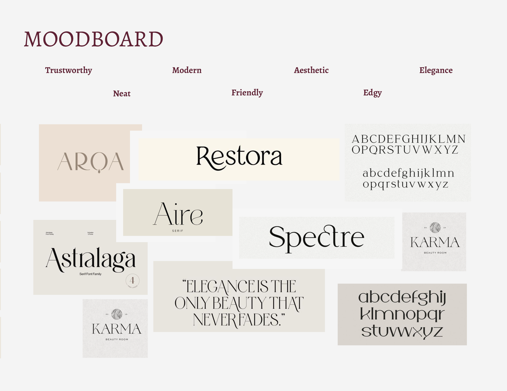
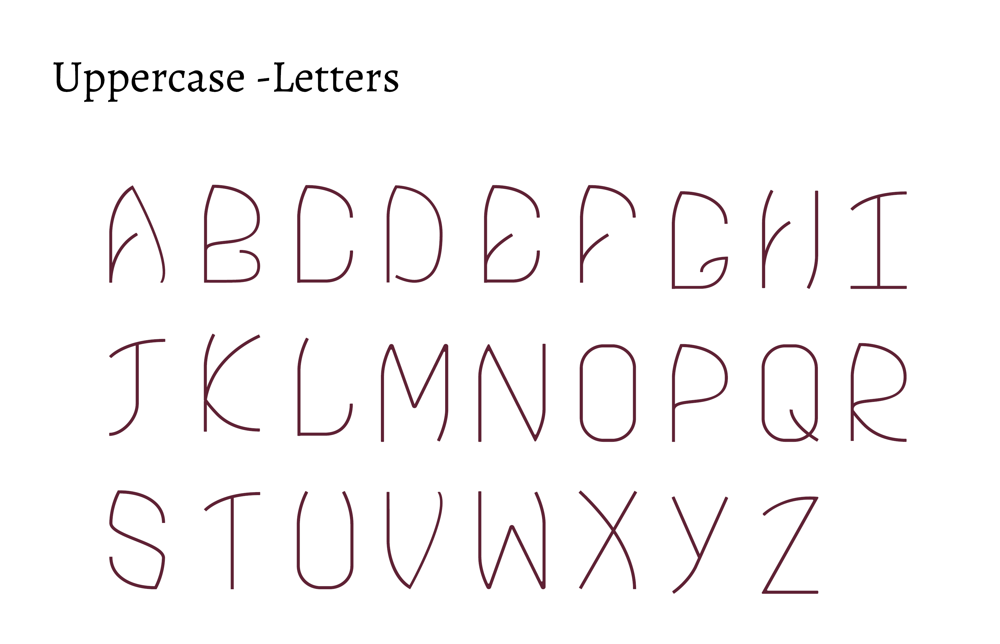

<div id="ajax-page" class="ajax-page-content">
    <div class="ajax-page-wrapper">
        <div class="ajax-page-nav">
            <div class="nav-item ajax-page-prev-next">
                <a class="ajax-page-load" href="portfolio-2.html"><i class="lnr lnr-chevron-left"></i></a>
                <a class="ajax-page-load" href="portfolio-7.html"><i class="lnr lnr-chevron-right"></i></a>
            </div>
            <div class="nav-item ajax-page-close-button">
                <a id="ajax-page-close-button" href="#"><i class="lnr lnr-cross"></i></a>
            </div>
        </div>

        <div class="ajax-page-title">
            <h1>Portfolio Project 4</h1>
        </div>

        
        <div class="portfolio-block">
            <!-- Project Description -->
            <div class="project-description">
                <div class="block-title">
                    <h3>Wyldrosa Typeface</h3>
                </div>
                <p class="text-justify">For this project, I created a typeface from scratch. The purpose of this project was to design a font that embodies a minimalist aesthetic with a touch of edginess, striking a perfect balance between elegance and friendliness. The design exudes style and carries a subtle feminine charm, making it ideal for creating brand logos that demand both sophistication and approachability.</p>

                <p class="text-justify">This typeface also serves well for decorative purposes, thanks to its versatile nature. It seamlessly blends into various design contexts, offering a unique blend of modernity and flair. Whether used in branding, editorial design, or other creative applications, this font adds a distinctive and stylish element to any project.</p>

          

                       
                
                <!-- /Project Description -->

                <!-- Technology -->
                <div class="tags-block">
                    <div class="block-title">
                        <h3>Technology</h3>
                    </div>
                    <ul class="tags">
                        <li><a>XD</a></li>
                        <li><a>Illustrator</a></li>
                        <li><a>Photoshop</a></li>
                    </ul>
                </div>
                <div class="white-space-30"></div>
                <div class="block-title">
                    <h4 >Project Details</h4>
                </div>

              
                <!-- /Technology -->

                <!-- Share Buttons -->
                <div >
                    <div>

                        <!-- /Share Buttons -->
                    </div>
                    <!-- Project Description -->
                </div>
            </div>
        </div>
        
        <div>
            <div class="portfolio-block">
                <!-- <div class="owl-carousel portfolio-page-carousel">
                    <div class="item">
                        
                    </div>
                    <div class="item">
                        
                    </div>
                    <div class="item">
                        
                    </div>
                </div> -->

                <DIV>
                    <DIV class="imagesanddescription">
                       

                       <div class="white-space-30"></div>

                       <div class="block-title">
                        <h3>About Font Name</h3>
                    </div>
    
                    <p class="text-justify">The font is named “Wyldrosa,” derived from “wildrose,” reflecting its connection to the beauty of the wild rose. This font embodies the characteristics of the wild rose, including elegance, beauty, friendliness, femininity, and even a touch of edginess, reminiscent of its ability to thrive in challenging environments.</p>

                    
                    
                    
                    
                    
                        
                 

                        <div class="block-title">
                            <h4 >Font Display Posters</h4>
                        </div>

                        <p class="text-justify">In regards to a series of posters, each specimen showcases the characteristics of the Wildrosa font. It embodies femininity, elegance, edginess, and friendliness.
                        </p>

                        <div class="white-space-30"></div>

                        <div class="block-title">
                            <h4 >Rough Sketches</h4>
                        </div>
                    
                    


                    <div class="block-title">
                        <h4 >Poster Series</h4>
                    </div>
                    
                    <div class="white-space-30"></div>
                    
                    <div class="white-space-30"></div>
                    
                    <div class="white-space-30"></div>
                    
                    <div class="white-space-30"></div>
                    
                    <div class="white-space-30"></div>
                    
                    <div class="white-space-30"></div>
                    

              

                    </div>

                        
                   
                    </DIV>
                </DIV>


                <script type="text/javascript">
                    jQuery(document).ready(function ($) {
                        $('.portfolio-page-carousel').imagesLoaded(function () {
                            $('.portfolio-page-carousel').owlCarousel({
                                smartSpeed: 1200,
                                items: 1,
                                loop: true,
                                dots: true,
                                nav: true,
                                navText: false,
                                margin: 10,
                                autoHeight: true
                            });
                        });
                    });
                </script>
            </div>

        </div>